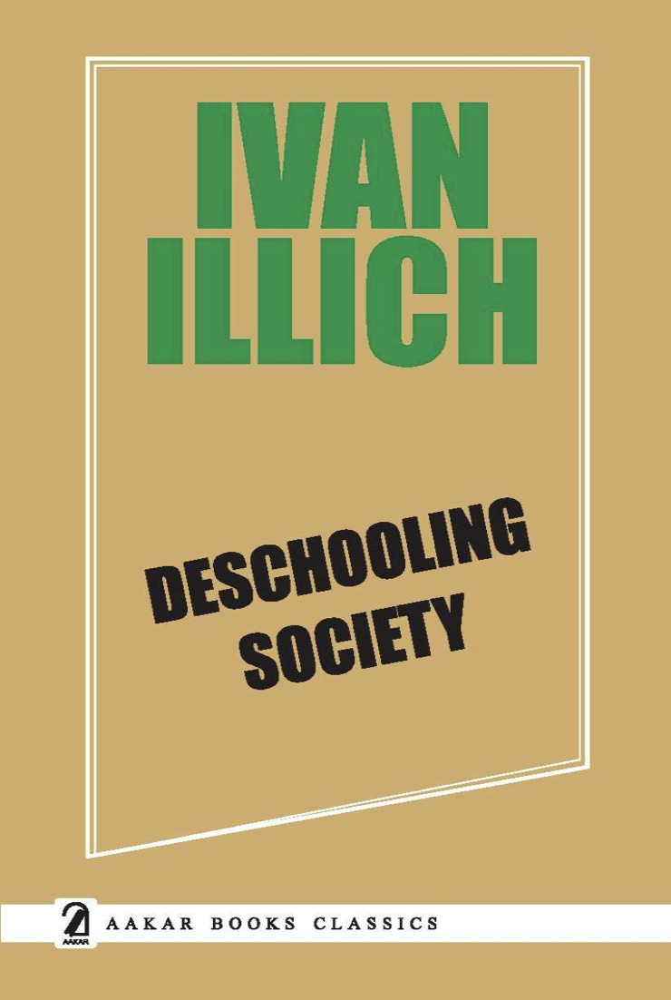
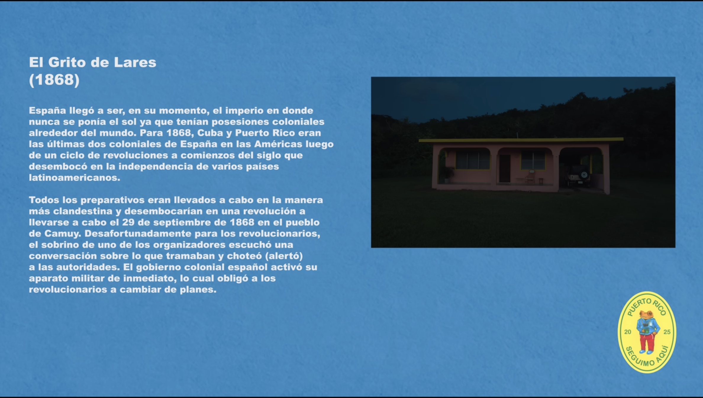

Shaka Clark | Spring Semester 2026
Without any formal background in teaching, or instructional design, I had a lot to absorb during the course of this semester. I therefore not only learned a lot about educational theory, I learned most about the debate how technology will shape how folks learn in the future. Throughout my practice within the class, I attempted to focus on creating tools for subjects I've taught or consumed - attempting to see the limits or edges of these tools. What I realized over the course of the semester is that many of the tools explored within the semester are only as good as they are accessible to the learners who can use them. For example a chatbot is only useful if learners understand the possibilities and limitations of AI chatbots. Virtual Reality is useful for learners open to or who have previously adopted VR experiences. This theme came up time and time again during class via debate (especially around the efficacy of AI tools), and within some of the tools themselves. Therefore my final reflection is more specifically that each tools capacity must be specifically scoped to certain goals, but will not easily be architected to answer all learning design needs.

I really enjoyed the capabilities Spatial.io provided to users out of the box - and specifically how VR platforms can allow younger users to learn and experience topics. I had less experience with VR (and some experience with Unity) but felt like the product we made as a group, with having little experience with VR before, felt powerful enough. My first takeaway is that tools like this, can allow educators to quickly spin up learning tools without a lot of pre knowledge or training beforehand. After utilizing the tool, I could quickly imagine how to market this tool to local Children’s museums (for example Bronzeville Children’s Musem) and can really expand the type of tech museums and educational spaces have access to, so much so that I’m considering prototyping an experience to send to them, to see if they’re interested.
During collaboration, I really enjoyed that we tried to keep the experience focused on the music, and building on the proposition that Bad Bunny is posing, that music can educate people. You can see evidence of this proposition via his collaboration with Jorell Meléndez-Badillo, a University of Wisconsin–Madison assistant professor of Latin American and Caribbean history which gave each song a syllabus of information to engage with. The collaboration with the other classmates and the MUSE colleagues then became easier as we already had a body of work to really engage with, and center ourselves within. Making some initial decisions about the tech (for example using a template room) allowed us to really focus on the artifacts, and gave us more space to learn about Puerto Rican history and culture, as it relates to decolonization and resistance.
I think we early on had a team decision that really helped us make future choices later without much challenge; how political should the exhibit read and feel? We decided to let the work speak for itself as much as possible, and also realized that even some of the “apolitical” items, were deeply political. For example, the pandereta hand drum, used in Plena, was used by many agricultural workers and later by worker movements. The genre, also known as the “sung newspaper”, was used to communicate with others the social and political happenings of the day. I think the decision to therefore not necessarily worry about the “politicalness” of the exhibit, but to instead be truthful and also ensure our sources allowed folks from the island and diaspora control the conversation became a goal. Overall this helped us update the artifacts used iteratively, and I believe is displayed in our final product - a somewhat cohesive display of artifacts that tell a layered story about colonization on the island. I think we also made a direct decision to make sure learners understood the lyrics, specifically highlighting the decolonization messages within the songs. For non Spanish speakers, this tries to ensure they can really engage with the messages, and reading lyrics and watching music videos is a great way to ensure dual coding.
As an web design instructor, I am now thinking deeper about how to really connect the learning to things present in folks everyday lives. For example, how would it look to always make sure learners have access to visuals and even sounds, to connect to HTML/JavaScript/CSS, and how to make it more familiar, less intimidating and joyful.

Throughout the course I was able to be introduced to different learning design theories and methods for learning in 2026. What seemed to come up the most is how the emergence of AI is challenging us to further understand the actual purpose of learning and school. At one level, the technology is bringing up the same debate as before - ie, "why do we need to learn X, if this tech can do it for us?". Or look how great AI is, we can make an infinite amount of experiences for learners within the same course and same material. But what we also found out is that the tool being built whether it's using AI needs to be actually grounded in research and solid learning design. For example, someone being put in front of a chatbot needs to have clear guidelines on the goal of using a chatbot. The chatbot needs clear context and guardrails on what it's goal is with the learner. All usage of generative AI needs to be grounded in actual learning theories. Also the type of content is also important. When I created the chatbot to learn Digital Literacy, I thought a chatbot would be great because often folks need help navigating technical tools and feel some embarrassment when they don’t know the answer. A chatbot allows them to navigate with less shame - but the chatbot still gives problematic answers. Something teaching digital literacy cannot afford to give problematic answers. But the usage of generative AI to make a deterministic multimodal experience may be a better end user experience. But again this learning isn't just for generative AI, it's for emerging technology used in the space - even if the use itself is cool, it must be grounded in learning.
The possibility in immersive experiences, especially free tools online like Spatial.io and games really give us a blueprint brought up a similar conversation for me. We cannot just create these immersive experiences or gamify learning because it's fun - it has to be grounded in learning desing. After we got to experiment with some of the games being pushed in K-12 environments, I had the opportunity to talk with my 6 year old nephew about his experience with certain games. He loved all the products we played with in class, but also his goal in general is to maximize screen time. So although I love the games and even created one for my final project, I'm still wary of the increased amount of screen time pushed on learners in general. Especially games that may not have much of a social aspect, how do we ensure tools like chatbots, or games not only give information, but allow learners to build connections with other learners? My other concern with gaming, and specifically virtual reality was around adoption. It's still somewhat in it's infancy stage for adoption, and the demand on VR content is high. For example, even though Spatial.io runs in a browser, it still uses a lot of CPU/GPU and can slow someone's machine down. For example, if we created even a browser based experience, how would it run on a less expensive Chromebook at a Chicago Public School. So even though I enjoyed creating an experience on Spatial.io I was reminded during our presentations (when various performance issues popped up) that this technology is still not accessible to everyone (even if you have a computer). I notice that all of these emerging technologies are only as good as the technology, the learning design and the level of accessibility of the tool.
This question of figuring out the right mixture of learning design, technology and subject matter will continue to be a conversation. As we discussed briefly in class, when Wikipedia emerged on the scene, many of us remember the huge distaste many of our teachers had for the website, much preferring physical Encyclopedias. What was lost from that narrative though is that physical Encyclopedias are expensive, heavy and become outdated very quickly. For example seeing Encyclopedias from the 1950s and 1960s referring to countries and nations with names from a pre-colonial Independence context. Wikipedia had the capacity to create a decentralized method for a true world encyclopedia with less emphasis on figuring out what is important enough to print. The emerging technology we discovered in class will have the same battle and its effectiveness will always be its speed to implement and demonstrate learning theories that are already proven; companies cannot trick us into thinking that just the usage of these technologies is inherently good or a higher quality experience. We have to be vigilant in measuring and determining outcomes to ensure learning remains intact.